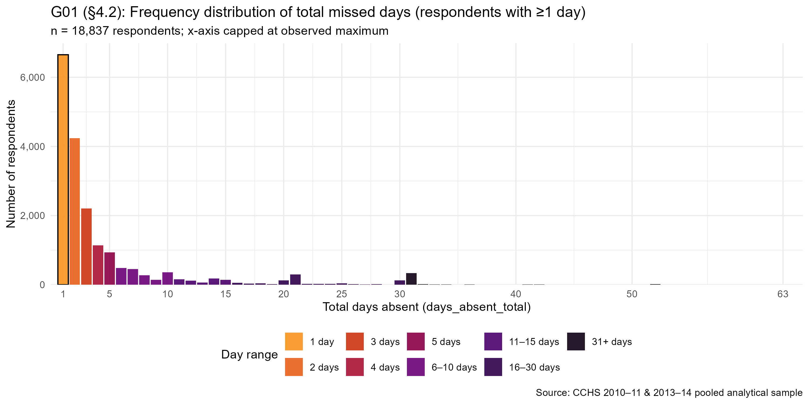
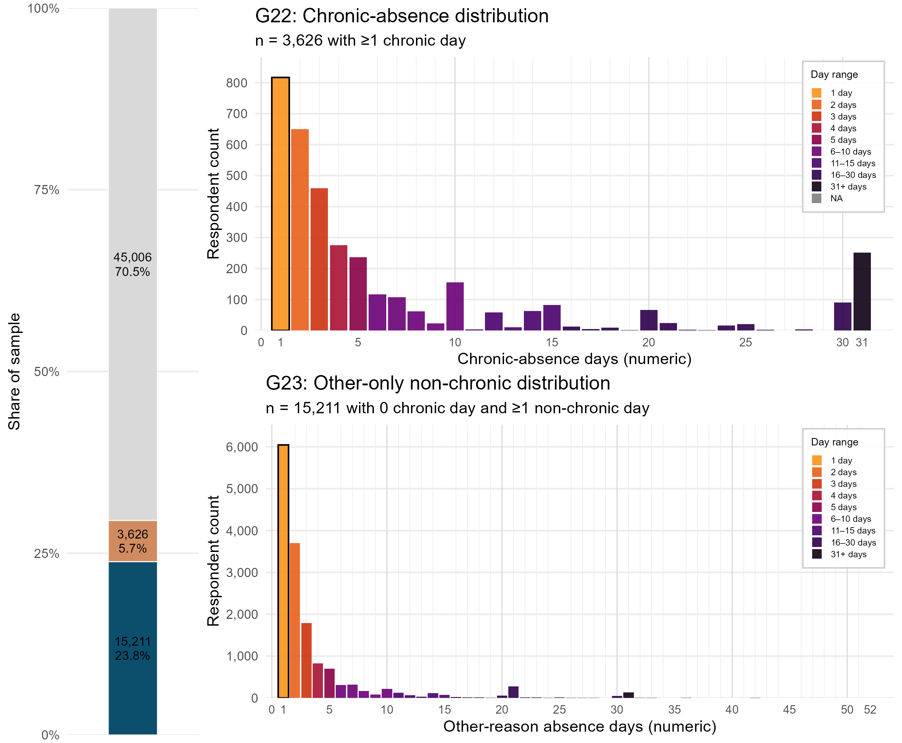
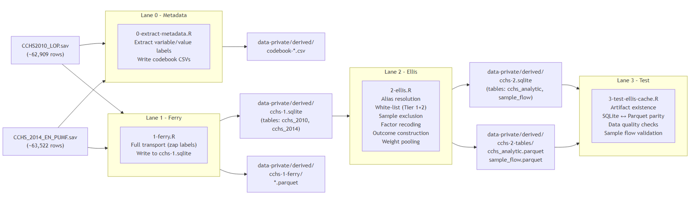

flowchart LR
RAW_2010["CCHS2010_LOP.sav\n(~62,909 rows)"]
RAW_2014["CCHS_2014_EN_PUMF.sav\n(~63,522 rows)"]
subgraph Lane0["Lane 0 – Metadata"]
META["0-extract-metadata.R\nExtract variable/value labels\nWrite codebook CSVs"]
end
subgraph Lane1["Lane 1 – Ferry"]
FERRY["1-ferry.R\nFull transport (zap labels)\nWrite to staging SQLite"]
end
subgraph Lane2["Lane 2 – Ellis"]
ELLIS["2-ellis.R\nAlias resolution\nWhite-list (Tier 1+2)\nSample exclusion\nFactor recoding\nOutcome construction\nWeight pooling"]
end
subgraph Lane3["Lane 3 – Test"]
TEST["3-test-ellis-cache.R\nArtifact existence\nSQLite ↔ Parquet parity\nData quality checks\nSample flow validation"]
end
CODEBOOK["Codebook CSVs\n(4 files)"]
FERRY_DB["Staging SQLite\n(cchs_2010, cchs_2014)"]
FERRY_PQ["Staging Parquet\n(cchs_2010, cchs_2014)"]
ELLIS_DB["Analytic SQLite\n(cchs_analytic, sample_flow)"]
ELLIS_PQ["Analytic Parquet\n(cchs_analytic, sample_flow)"]
RAW_2010 --> Lane0 --> CODEBOOK
RAW_2014 --> Lane0
RAW_2010 --> Lane1 --> FERRY_DB
RAW_2014 --> Lane1
FERRY_DB --> Lane2 --> ELLIS_DB
Lane1 --> FERRY_PQ
Lane2 --> ELLIS_PQ
ELLIS_DB --> Lane3
ELLIS_PQ --> Lane3
Absent from Chronic
Predictors of Work Absenteeism Associated with Chronic Conditions Among Canadian Workers
Authors: Marc-Andre Blanchette · Oleksandr Koval · Andriy Koval
Data source: Canadian Community Health Survey (CCHS) — pooled cycles 2010-2011 and 2013-2014
Analytic sample: 63,843 employed respondents (unweighted); weighted N = 17,844,913
Outcome in Focus
The primary outcome is the total number of workdays absent in the three months preceding the survey, summed across all health-related causes from the Loss of Productivity (LOP) module. The distribution is heavily zero-inflated (70.5% zeros) with a long right tail — a pattern that motivates the negative binomial modelling strategy specified in the Project Proposal.

The chart below shows the same outcome split by respondents who reported at least one chronic condition versus those who did not. The chronic-condition subgroup drives the right tail of the distribution.

About This Site
This site provides a structured, navigable record of the statistical analysis work for the study above. It is organized as evidence: every section responds to a layer of the Project Proposal requirements.
Project contains the original statistical analysis instructions submitted by the PI. It is the authoritative statement of what the analysis must deliver.
Pipeline documents the data infrastructure: how the two raw CCHS files were transported into a staging database (Ferry), transformed into the analytic dataset (Ellis), and validated (Test). The CACHE Manifest describes the 69-column, 63,843-row dataset produced by the pipeline. The INPUT Manifest describes the two raw SPSS files.
Data Primer contains variable-level traceability. The Variable Inclusion page maps every construct in §2.2 of the Project Proposal to its concrete PUMF variable and Ellis implementation. The Univariate Distributions page shows the empirical distribution of every variable in the analytic sample.
Analysis contains seven exploratory data analyses organized by Andersen Behavioral Model domain: outcome decomposition, distribution shape analysis, primary exposure (chronic conditions), and the four predictor domains (predisposing, facilitating, needs, missingness).
Site Map provides an oriented index of all pages with explicit Project Proposal linkage.
Pipeline Architecture
The data pipeline follows a three-lane Ferry → Ellis → Test pattern, beginning from two raw CCHS SPSS files and producing a validated analytic SQLite database and Parquet archive.
The rendered pipeline architecture diagram is shown below for reference.
